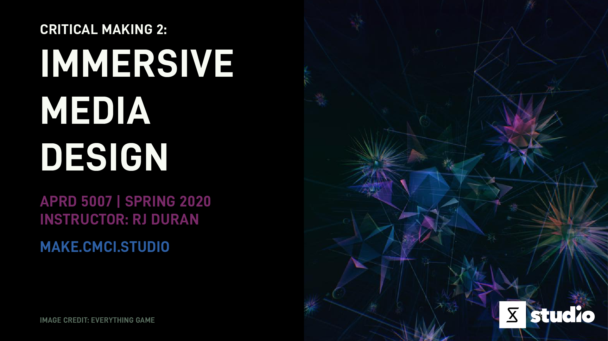

Critical Making 2: Immersive Media Design

Focuses on building virtual reality and augmented reality based experiences for product innovation. It is a studio-based course that explores the intersection of virtual reality (VR) tools and workflows, interaction design, multimedia production, and product innovation as possible tools for solving industry-based challenges. Students will develop fundamental skills in 2D/3D asset creation, reality capture and representation, simulation, animation, and rendering strategies used in the production of high-quality content for use in crafting immersive digital experiences. The course will utilize industry-standard tools such as Unity, Cinema 4D, Adobe Creative Cloud, and hardware platforms such as HTC VIVE and Oculus Rift. In addition, the course will cover concepts ranging from UI/UX design for immersive experiences, interaction design in VR, programming game mechanics, designing for human interaction, and scripting behaviors for digital objects and agents.
Information
Day and Time:
Monday, 1:30 pm - 4:30 pm
CMCI Studio (1301 Walnut St)
Instructor:
RJ Duran
Email: rj.duran@colorado.edu
Slack: @rjduran on cmcistudio.slack.com
Office hours by appointment. Feel free to reach out to me via slack or email.
Slack:
Channel #cmstudio and user group @imd will be used for all course communication and notifications. Be sure to use the appropriate user group when necessary.
Course Themes
- Building VR Experiences
- Building Mobile AR Experiences
- Designing Media for VR and AR
- VR and AR Hardware Systems
- Scripting / Programming
- Digital Asset Creation
- Digital Workflows and Asset Pipelines
- Reality Capture
- Interactive and Immersive Digital / Physical Experiences
- Emerging XR Tech
- UX/UI of XR
- Rapid Prototyping
- Product Development
Resources
This website is the primary resource for all Critical Making Studio courses. Some of the resources used across the different courses are divided up into sections found on the left sidebar. Course specific resources will be found within this course schedule page, also found near the top of the left sidebar.
CMCI Studio
CMCI Studio facilities include the large main room (West Studio) and adjacent smaller room (North Studio). Both rooms contain different functionalities for developing projects at varying scales and for varying audiences. Read through the Studio Handbook for learning about each room and accessing the various tools and capabilities we have on site.
DCMP VR Lab
The CMCI Department of Critical Media Practices (DCMP) VR Lab contains tools and equipment for building VR, AR, and MR based experiences. Students have keycard access to a variety of PC workstations with HTC Vive Pro Hardware, Apple iMac workstations and software including Unity, UE4, Metashape Pro, Blender, and Adobe Suite.
Lab Manager: Jason Gnerre
Email: gnerre@colorado.edu
Location: Folsom Stadium. STAD 136, between Gate 5 and 6. (map)
Hours: Go check the schedule posted on the door to see when the lab is open.
IMD Learning Resources
This course will make use of various kinds of media such as books, websites, technical documentation, and video tutorials spanning interaction design, game engines, programming / scripting, computer graphics, and hardware systems used to construct immersive media based experiences. While some resources will be listed under the week we encounter them, most of the primary learning resources can be found listed in the Learning Resources section of the IMD Setup Guide.
Course Repo
You will be able to find the examples we talk about in class here.
Course Repo: CM2-IMD
Workload
- This is a 3 credit hour course. You should expect to dedicate at least 2-3 hours per credit hour. This translates into a 6-9 hours per week. Consider 6 hours a minimum expectation for one studio course and plan accordingly with your other studio courses.
- Deliverables for the course consist of "Looking Outwards" Reports, Workouts, Projects, and a Final Project. These are to be submitted weekly as blog posts on the due date specified each week. In general, assignment parameters will be based on the topics of the week and due the following week by the start of class time. Refer to the Deliverables section for more detail.
- The course is organized into weekly meetings consisting of instructor led project-driven topics organized as workshops and studio work sessions. It is expected that all students are active participants in each session.
- This course will require considerable effort outside of class time. Plan work sessions with others as much as possible and be sure to take care of your mind and body so as not to get too stressed or overexert yourself. If you should need assistance managing stress or otherwise, you can get in touch with CAPS.
Deliverables
This is an experimental project based course, largely driven by student research and interests. Each week will follow a similar format when it comes to finding balance between theory and practice. It's expected that each student has varying skills and interests upon entering the course and are excited to expand on them and apply them towards their areas of interest.
The course deliverables consist of "Looking Outwards" Reports to discover the emerging boundaries of XR and report on them, Workouts to develop skills in 3D asset creation, C# scripting, and modern XR toolkits, Projects to put research findings into practice and exercise creative faculties, and a Final Project to design and build a functional XR experience.
Each deliverable is expected to vary based on the area of interest and parameters defined. The following outlines the general criteria for course deliverables throughout the semester.
Looking Outwards
What is a "Looking Outwards" Report?
It's basically a blog post containing your research, thoughts, and ideas on a particular topic of interest. This means you should be looking at a variety of information sources such as blogs, emerging tech news, research papers, design/art/tech focused websites, tutorials, etc. covering the topics listed under Course Themes and reporting on what you find each week. These kinds of reports are due almost every week as noted in the schedule and count towards 10% of your final grade.
This approach is inspired by Prof. Golan Levin's Looking Outwards Reports for the course Interactivity & Computation at CMU School of Art.
Why are we doing these?
- Reason 1: I literally can’t keep up with the changes taking place in the various fields related to XR and I need your help. Many hands make light work. You are the pioneers of this class and are tasked with discovering content and creating documentation that adds to the field of Immersive Media Design.
- Reason 2: We need to build a body of documentation that connect several disparate fields. Conducting research across several fields will uncover new and interesting opportunities for us.
Throughout the semester I will document our collective findings under Looking Outwards (found in the left sidebar under CM 2 IMD).
Workouts
What is a "Workout"?
A workout is some kind of weekly exercise that aims to practice and build skills. It's just what it sounds like, a way to work your "muscles."
What form do these take?
They can take the form of reading technical documentation, writing code, solving a design challenge, trying out new software, and working through video tutorials that challenge and enable practice of concepts discussed in class. These are not graded but are highly recommended because they will provide greater understanding of a specific topic through focused hands-on practice. You may write blog posts for the workouts you do to help document your progress and process but it's not required.
Projects
What is a Project?
A project aims to solve a problem or accomplish a goal using tools and skills.
What form do these take?
They are largely based on the topics explored in class, through the workouts, and through your research. They allow you to dig into and expand on a topic that interests you within the field of Immersive Media Design. They can be thought of as mini-projects to build towards developing your final project or one-off experiments exploring a particular technique or software workflow you are interested in. Projects are due every few weeks as noted on the schedule and count towards 40% of your final grade.
Final Project
Read more about writing a project proposal and final project deliverables here.
Grading & Evaluation
Grades for the course follow the standard A through F letter grading system and will be determined by the following breakdown.
| Type | Percentage of Grade |
|---|---|
| Looking Outwards | 10 % |
| Workouts | Not graded |
| Projects | 40 % |
| Final Project | 50 % |
Work is evaluated based on the following:
- Done vs Not Done. Done gets credit, Not Done does not get credit.
- Quality and Quantity of deliverables. This studio based course requires a healthy level of creative immersion and balance to be successful. Explore your creative process through making and always deliver to the best of your abilities. Achieve quality through quantity.
- Engagement with the subject matter. If something isn't interesting to you, make it interesting.
- Clarity of documentation. Make it easy for others to read and understand.
- Collaboration will also be a factor of evaluation if you choose to work on projects in teams of no more than 3-4 people. The division of duties on any project needs to be clearly defined and documented by all team members and will factor into individual evaluations.
Week 1: Overview
Jan 17 (Friday)
- Overview of Course
- Course Deliverables
- IMD Setup Guide
- Mobile Devices Survey
- DCMP VR Lab Tour - Friday Jan 31, 9:30-10:30am
- VR and AR Hardware & Software Overview
- There are various ways to get started with VR and AR at this point in time. Too many in fact. It can be difficult to know where to begin. For the majority of this class we will be focused on Unity, XCode, Cinema4D, and C# Scripting with Visual Studio or VSCode.
- For hardware we have several HTC Vive units, a desktop PC and two laptop PCs capable of running any VR experience you build. You also have access to the DCMP VR Lab to develop experiences.
- Looking at the results from the mobile device survey you filled out, most people seem to have a recent Apple iPhone capable of supporting AR Kit. Yay!
Related
- CES2020 Reports in VR/AR
- Apple AR
- App Store AR
- AR Foundation
- Adobe Aero
- Using quicktime to show AR content running on device. If your camera or microphone doesn't show up, you may need to goto Security & Privacy in System Preferences and enable Microphone access for QuickTime Player.
- Big Bang AR (App Store)
- XR Ethics Manifesto by Kent Bye (Voices of VR Podcast)
- How and Why Immersive Experiences Are Taking Over the Denver Art Scene
- This is the computer you’ll wear on your face in 10 years
- Spectacles by Snapchat
- Lens Studio by Snapchat
- Spark AR Studio by Facebook/Instagram
- Goodbye Uncanny Valley - A great overview of computer graphics, rendering technologies, and a spectrum of works exploring the future of the CG medium.
- VR Awesome
- VR, AR and Mixed Reality Resources
- The UX of VR
- AR Will Spark the Next Big Tech Platform—Call It Mirrorworld by Kevin Kelly
Where to find more VR and AR news
People / Projects
- Wenzy90
- Andrew James Art
- Matt Taylor - 3D Gfx and Motion Designer / Artist
- Robbie Tilton - Designer
- Keijiro Takahashi, Unity Experiments
???+ note "Looking Outwards [0]: The XR Landscape"
Begin looking at the current state of VR and AR applications, tools, and technologies. Spend time this week scanning the latest from CES 2020 and other tech news sources reporting on the state of the industry, new technology, design and development trends, and showcasing interesting applications and use cases in AR/VR. Start by investigating some of sites above.
1. Identify 2-3 applications or aspects of VR and/or AR you find intriguing.
* What's interesting to you about your findings? Try to be specific.
2. Identify 2-3 creatives (story tellers, designers, developers, coders, etc) that are making interesting digital content or VR and/or AR based media or works.
* What are they making?
* Try to identify specifically what is interesting to you about their work and workflow. What's inspiring about the work?
* What kinds of tools are they using?
Share a link to your post with user group **@imd** in Slack channel **#cmstudio**.
**_Due: Jan 27_**
???+ example "Workout [0]: Getting Started"
1. This week you need to download and install the required software listed in the [IMD Setup Guide](/guides/imd-setup-guide/).
2. You should start exploring any of the tools through the freely available and built in documentation, tutorials, and guides. Adobe, Cinema4D, Unity, and XCode have large user communities and great documentation to get started. My suggestion is to start getting familiar with Unity since much of the work we do will end up in there. I suggest looking in the Unity tutorials for a Foundational tutorial or Creator Kit tutorial that interests you to work through over the next week.
Getting Started with Unity
* [learn.unity.com](https://learn.unity.com/)
* [Creator Kit: Puzzle](https://learn.unity.com/project/creator-kit-puzzle)
* [Projects](https://learn.unity.com/projects)
* [Unity Manual](https://docs.unity3d.com/Manual/index.html)
Week 2: No Class
Jan 20
MLK Day, No Class
Week 3: Intro to Cinema 4D
Jan 27
Discussion
- Looking Outwards [0] - What did you find?
- Workout [0] - Any software issues? What did you make?
- Course Repo: CM2-IMD - You will be able to find the examples we talk about in class here.
This week we are starting to look at C4D's comprehensive set of tools for creating assets that can be used in VR and AR. Many people use the tools for motion graphics, which you will quickly find as you start investigating the tutorials and resources out there. Just like other 3D design software, it can be a bit intimidating at first since there are so many ways to use it and so many tools to get familiar with.
In my experience, it's best to start by focusing on understanding a few tools that help you accomplish a specific task, then continue exploring whats possible as you learn your way around. C4D is similar to Blender, Autodesk Maya, and After Effects in many ways and combines the best of some of these tools into something approachable for designers new to working in 3D. Most people working in the motion graphics world utilize some combination of C4D, After Effects, Illustrator, and Photoshop.
Overview
- The Interface
- Layouts, Toolbars, Views, Timeline, Materials, Objects, Attributes
- Default Units = cm
- To Change Units: Edit > Preferences > Units > Basic > Unit Display
- Views
- Single and 4 Up View (Perspective, Top, Right, Front)
- To Reset View: View > Frame Default
- Axes
- X = Red, Y = Green, Z = Blue
- XYZ Gizmo (aka "Gumball")
- Translation (Coordinates), Scale (Object Properties)
- Planar or Multi-Axis Movement (Corner Angle Gizmos)
- Scale with small boxes on gizmo
- Object Movement
- Translation - E
- Scale - T
- Rotate - R
- Movement in Views
- Pan - 1 + Click (OR Two-Finger Movement)
- Zoom - 2 + Click (OR Pinch-In/Out Movement)
- Orbit - 3 + Click (OR Option + Click)
- Primitives (Objects)
- Object Manager - All the objects in the scene
- Renaming Objects
- Attribute Manager - Properties for selected object(s)
- Object Manager - All the objects in the scene
Modeling
- Primitives - "Blue Cube" Icon
- Parametric Object vs Polygonal Object - aka "Make Editable" - C
- This converts a parametric object into a polygonal object with vertices, faces, and edges.
- Splines - "Pen" Icon
Materials
- Creating new materials
- Assigning colors
Animation
- Using keyframes to create motion
- Position
- Size
- Rotation
- The Timeline
- Adding keyframes
- Visualize Curves
- Window > Timeline (F-Curve)
Import / Export
- Rendering Images / Video
- Render View - CMD + R (Quick Render in Active View)
- Render Settings - Set size, output location, etc
- Render to Picture Viewer
- Window > Picture Viewer
- Exporting 3D Models
- File > Export
- File Types: FBX, OBJ, etc
- Making videos and GIFs
- Exporting MOV or MP4 videos from C4D
- Gif Brewery 3 (macOS App)
- After Effects
- Tutorial: How to import an image sequence
???+ note "Looking Outwards [1]: Motion Design"
The world of motion graphics is powered by Cinema 4D and lots of creative magic and skill. Before we jump further into building VR and AR applications, it's good to have some understanding of at least one 3D design workflow or toolset for producing content.
Your objective this week is to investigate what designers are doing and how they are doing it to bring ideas to life. Whether producing content for ads or marketing, designing animated info graphics or data visualization, or exploring digital art or building games, understanding the role of motion design in our digital landscape is an essential part of any modern designers toolkit.
1. Identify 2-3 applications or aspects of motion design or motion graphics you find intriguing.
* What's interesting to you about your findings? Try to be specific.
2. Identify 2-3 creatives (artists, designers, freelancers, agencies, collectives, etc) that are exploring motion design.
* What are they making and how?
* Try to identify specifically what is interesting to you about their work and workflow.
Share a link to your post with user group **@imd** in Slack channel **#cmstudio**.
**_Due: Feb 3_**
???+ example "Workout [1]: Getting Familiar with Cinema 4D"
This week I would like you to explore Cinema 4D as a tool for creating 3D assets for use in VR and AR applications. I assume most are new to the environment so just explore the resources below to get a feel for how to work with the tools. Most importantly, attempt to make something that you are interested in. You can use these tutorials are starting points or explore another workflow you find.
Getting Started with Cinema 4D
* [Introduction to Cinema 4D](https://www.linkedin.com/learning/introduction-to-3d-2/cinema-4d-interface-and-overview?u=42275329) - Part of the LinkedIn Learning Course [Introduction to 3D](https://www.linkedin.com/learning/introduction-to-3d-2). It covers the basics of C4D.
* [Getting Started with Cinema 4D by EJ Hassenfratz](https://www.cineversity.com/vidplaylist/getting_started_with_cinema_4d_r20) - A great introduction series. I highly recommend starting with these.
* [Introduction to Cinema 4D](https://greyscalegorilla.com/intro-to-cinema-4d/) by [Grey Scale Gorilla](https://greyscalegorilla.com/) - Tutorial series by one of the best motion graphics resources out there.
* [Cinema 4D Tutorials](https://www.youtube.com/playlist?list=PLn_EY8NKzmnAYKIghACOh1PrIrl0vlPjZ) by [MOBOX Graphics](https://www.youtube.com/channel/UCQyp3CBrBSfIynoDosN3c7g) - Simple tutorials for C4D and After Effects.
* [School of Motion Cinema 4D Tutorials](https://www.schoolofmotion.com/search-results?templateTypes=TUTORIAL&category=&tool=Cinema%204D&pageIndex=0)
Week 4: Intro to Unity / XR Assets
Feb 3
Discussion
- Looking Outwards [1]: Motion Design - What did you find?
- Workout [1]: Getting Familiar with Cinema 4D - What did you make?
Intro to Unity
- Overview of Interface
- Asset Store
- Building a Basic 3D Project
- Assets Folder / File Management
- GameObjects
- Unity Manual
Working with Assets
- Where can you get 3d assets for a project?
- How do you make them?
- You can 3d model your own or find them online.
- What are common file types for VR and AR content?
- FBX, OBJ, glTF
- How can I view asset files?
- FBX Review - A really useful cross platform file viewer for FBX files.
- Meshlab - This is a good viewer for OBJ files and working with 3d scan data (meshes).
- Blender
Cinema4D
- Exporting FBX files for use in Adobe Aero or Unity
- How to bake dynamic animation to keyframed animation.
- For Adobe Aero there are several limitations in the current (1.0) version, but this will improve over time. It's a good time to start getting familiar with the types of animation that are possible. Read Key 3D modeling concepts: Animation from the Adobe Aero documentation to learn more.
Adobe Mixamo is a tool that lets your choose a character and animate it with a set of parameters. You can eaily upload human character models from Fuse or another character modeling workflow and auto-rig it. Once a model is rigged and has an animation you can export it for use in Adobe Aero, Unity, or for further manipulation in a 3D modeling environment.
Adobe Fuse is part of creative cloud and is currently available but will be removed from Creative Cloud in September 2020. Unfortunately Adobe Fuse does not run on macOS Catalina since it's a 32-bit application. Adobe is not supporting it anymore. We are forced to look at other character modeling tools like Make Human or DAZ3D for near-out-of-the-box character (humanoid/avatar) parametric modeling.
???+ note "Looking Outwards [2]: Report on XR Assets"
Your objective this week is to investigate how assets are created for AR and VR.
1. Identify 2-3 tools that help designers create 2D or 3D assets for use in VR and AR and find some key learning resources for them.
* What's interesting to you about your findings? Try to be specific.
2. Identify 2-3 industries or creatives (game designers, artists, programmers, creative coders, etc) making use of these tools to build their experiences.
* What are they making and how?
* Try to identify specifically what is interesting to you about their work and workflow.
Share a link to your post with user group **@imd** in Slack channel **#cmstudio**.
**_Due: Feb 10_**
???+ example "Workout [2]: Asset Workflows"
This week I would like you to explore the asset creation workflows shown above and in class. Experiment with tools such as Mixamo to customize and animate a humanoid character or Cinema 4D to build a dynamic animation for use in Adobe Aero or Unity. Perhaps you come across another tool when researching how assets are created this week. Attempt to build something with that tool and workflow. Once you have some kind of asset, put it into Adobe Aero to view it in AR or build a simple Unity world around it. Make a screen capture of your experience and share it in your report if you like.
**AR Prototyping with Adobe Aero and Cinema 4D**
* Export FBX file from Cinema 4D
* Open the Creative Cloud Desktop Application (In the menu bar on macOS or system tray on Windows).
* Goto File > Open Sync Folder. This will open the "Creative Cloud Files" folder on your system to drop your asset files into.
* Copy assets to this folder. They will sync with the cloud and show up in Adobe Aero.
* In Adobe Aero, make a new scene, scan a surface and add files from Creative Cloud.
**Adobe Aero References**
* [Get Started](https://helpx.adobe.com/aero/get-started.html)
* [Supported file formats](https://helpx.adobe.com/aero/using/supported-file-formats.html)
* [Prepare 3D Content](https://helpx.adobe.com/aero/using/prepare-3d-content-aero.html)
* [Import FBX files into Aero](https://helpx.adobe.com/aero/using/import-fbx-files-into-aero.html)
* [Import animated FBX from C4D/Maya to Aero](https://community.adobe.com/t5/aero/import-animated-fbx-from-c4d-maya-to-aero/td-p/10755583?page=1) - Aero only supports (Position-Scale-Rotation) PSR Animations for the time being.
* Tutorial: [Using Adobe Aero & Cinema 4D to Create Augmented Reality Experiences](https://www.eyedesyn.com/tutorials/using-adobe-aero-cinema-4d-to-create-augmented-reality-experiences/)
* Tutorial: [Using Cinema 4D Art for Augmented Reality with Adobe Aero](https://www.schoolofmotion.com/blog/using-cinema-4d-art-augmented-reality-adobe-aero) - This is a slightly expanded and step-by-step version of the previous tutorial by EJ Hassenfratz.
Week 5: Apple Development / Intro to Xcode
Feb 10
Discussion
- Looking Outwards [2]: Report on XR Assets - What did you find?
- Workout [2]: Asset Workflows - What did you make?
- Minor change. "Assignments" are now referred to as "Projects".
- Questions on Cinema 4D, Unity, Adobe Aero, other stuff?
This week we will work on getting everyone setup as Apple developers as part of our CMCI STUDIO team. We will then take a look at Xcode and start looking at how to start building apps using Unity and AR Foundation as time allows. We will be looking at different aspects of AR Foundation and scripting in the weeks ahead.
iOS University Developer Program
- Getting started with app development
- Setup access to CMCI STUDIO team. I need the following. Send to me via Slack DM.
- I need your university (@colorado.edu) email address to add you to the team.
- I need some device information for any Apple device you will want to use.
- Next Steps: Get familiar with Xcode and all the development resources on developer.apple.com.
Intro to Xcode
- Overview
- Team, Signing Certificate, Provisioning Profile (IMD)
- Building an iOS Application
- Run app in simulator and on a device
- Xcode Help
References
- Getting started with iOS development - A section from the Unity manual. Good to be familiar with for building apps in Unity with the goal of putting them on iOS devices.
Project #1: Asset Creation & Visualization
-
Design a set of avatars / characters and environmental assets for use in VR or AR experiences.
- Create at least 1 avatar / character
- Create at least 2 environmental assets
Tips: Using Cinema 4D, Make Human, Mixamo, Fuse, and/or another character building or 3D modeling workflows, design a collection of assets that can be used in VR and/or AR applications. What kind of assets? Each tool we've encountered so far has a set of tools and functions. For instance, Make Human is a parametric character modeling tool. The resulting human figures can be exported and imported into Mixamo for auto-rigging. Cinema 4D as you have seen is primarily used for motion graphics but can be used to animate dynamic 3D objects for use in other workflows such as Unity or Adobe Aero.
-
Visualize your assets in an interesting way using Adobe Aero, Torch AR, and/or Unity.
- If using Adobe Aero or Torch AR, experiment with the built in behaviors (interaction and triggers) functionality to give your AR experience dynamic interactions.
- If using Unity, you likely are interested in building a VR expeirence using Steam VR. Follow the Unity + SteamVR tutorial to setup a basic VR world and configure object interaction and teleportation.
Deliverable:
Documentation in the form of a blog post of your design process and assets created.
- What were your goals and outcomes?
- Use screenshots, screen captures, renderings, gifs, Sketchfab viewers (for sharing 3D content), Github repos, and video.
- Include links to any tutorials, videos, and learning resources used.
- Be prepared to give a short presentation of your project next class.
Share a link to your post with user group @imd in Slack channel #cmstudio.
Due: Feb 17
Week 6: Intro to C# Scripting in Unity
Feb 17
Discussion
- Project 1 Share
- Intro to AR Foundation next week
Getting Started
- Download and Install Visual Studio if you haven’t done it yet. Refer to the required software in the IMD Setup Guide.
Scripting, Why and How?
- Scripts act as the glue between everything in Unity. They enable custom functionality between objects and systems, handle user input (interactions, touches, etc), allow GameObjects to interact with eachother, enable connectivity with networks, and much more.
- Scripts are simply added to GameObjects or used in combination with other C# files to build functionality through code. Visual Studio is the primary IDE tool for developing (writing code) scripts.
- What is scripting in Unity?
- A unity "script" is a C# file that contains a Class that inherits from MonoBehaviour. Read about Creating and Using Scripts.
- What is C#? A programming language.
- There are many resources online there to learn and practice. You can start with some of the resources below in the workout for this week.
- What is in a script? Lets find out!
Primary References
These are the primary references for learning about scripting in Unity. Bookmark and refer to as needed.
Hello World Script
- Build a Unity Project
- Make a Cube GameObject. (What's a GameObject anyway? Lets look at the GameObject class in the Unity Scripting API.)
- Make a new script and add it as a Component to your new GameObject. Double click the script in the Assets folder to launch Visual Studio.
-
Write code in Visual Studio to print to the Unity console from your script.
- Type the following code into your Start() function. Save the script.
Debug.Log("Hello World!!"); -
Press Play in Unity
- Cool! This should display your log message in the Unity console.
Where to go for help
- Unity Forum
- Stack Overflow for Unity3D
- Google it of course!
???+ note "Looking Outwards [3]: Identifying Functionality in Scripts"
1. Identify a technique, behavior, or interaction that is made possible through the use of a script in Unity and write about it. It may help to do this after working through the tutorials in the workout.
2. Using the [Scripting Reference](ttps://docs.unity3d.com/ScriptReference/index.html), locate and point out any relevant classes, properties, and/or methods that enable the functionality you have identified. For example, every object in Unity is a [GameObject](https://docs.unity3d.com/ScriptReference/GameObject.html) with a [transform](https://docs.unity3d.com/ScriptReference/GameObject-transform.html) property and a [SetActive](https://docs.unity3d.com/ScriptReference/GameObject.SetActive.html) method. The transform property is used to access the position, rotation, and scale of the object and the SetActive method is used to enable or disable the object.
_TIP: [Watch this short video showing how to search the Unity Scripting Reference](https://youtu.be/PDeha4vRXXU). If you press **CMD + '** while highlighting a particular class or method in a script, you will launch the Unity Scripting API search in the browser. It will return the results of the search, which you can then locate the information you need. For example, in a script select the "transform" method text and press **CMD + '** to launch the search._
Share a link to your post with user group **@imd** in Slack channel **#cmstudio**.
**_Due: Feb 24_**
???+ example "Workout [3]: Scripting in Unity"
This week your task is start getting familiar with scripting in Unity by working through the following tutorials.
1. Start by working through the [Roll-a-Ball Tutorial](https://learn.unity.com/project/roll-a-ball-tutorial). It's a great starting point to understanding how to use a script for controlling object movement and interaction in a scene. If you have already gone through this tutorial, then proceed to work through the tutorials below or expand upon what you learned in the Roll-a-Ball Tutorial.
2. Work through [Unit 1 - Player Control](https://learn.unity.com/project/unit-1-driving-simulation?courseId=5cf96c41edbc2a2ca6e8810f) in the course [Create with Code](https://learn.unity.com/course/create-with-code). This walks step-by-step through making a car and airplane simulation.
Optional Tutorials
1. Watch the [Beginner Scripting](https://learn.unity.com/project/beginner-gameplay-scripting) video series. You don't need to code everything they explain, just watch in order to better understand something about C# and how the language is used.
2. Work though [Coding in Unity for the Absolute Beginner](https://learn.unity.com/tutorial/coding-in-unity-for-the-absolute-beginner). This is a video from 2014 but the concepts are still relevant. Watch this one for another take on how to use scripting to build functionality.
**Beginner C# Resources**
_Note: These resources are listed under [IMD Learning Resources](/guides/imd-setup-guide/#learning-resources) > [C# (C Sharp)](/guides/imd-setup-guide/#c-c-sharp)._
* [Visual Studio Tutorials | C#](https://docs.microsoft.com/en-us/visualstudio/get-started/csharp/?view=vs-2019)
* [C# Documentation](https://docs.microsoft.com/en-us/dotnet/csharp/)
* [Learn C#](https://www.learncs.org/)
* [W3Schools C# Tutorial (C Sharp)](https://www.w3schools.com/cs/default.asp)
* [The C# Players Guide Book](/dl/The-Csharp-Players-Guide-3rd-Edition.pdf) (pdf) - This is a great resource to better understand the C# programming language.
**Unity Resources**
* [learn.unity.com](https://learn.unity.com/)
* [Unity Manual](https://docs.unity3d.com/Manual/index.html)
* [Unity Scripting API](https://docs.unity3d.com/ScriptReference/)
Week 7: Intro to AR Foundation
Feb 24
Discussion
- Looking Outwards [3]: Identifying Functionality in Scripts - What did you find?
- Workout [3]: Scripting in Unity - What did you make?
- Question for class - Continue with AR Foundation next week or move on to SteamVR?
- Questions - Unity, Scripting, Visual Studio, Docs, C# Language, etc
AR Foundation
- What is AR Foundation?
- AR Foundation is a set of Unity packages that enable Unity based applications to build and run on AR compatible devices supporting ARKit (iOS) or ARCore (Android).
- Emerging Tech - It's still the early days of learning to use this tool and lots of things are still in flux. The package has only been around for a few years and supported by a handful of devices but this will soon shift as more AR compatible devices come to market. In short, the time to start learning how to work with these tools is NOW.
- The best resource to staying up to date is the Unity Blog, AR/VR (XR) Unity Forum, and the AR Foundation Docs.
- AR Foundation Overview
{kind=link}
Building Unity Applications for iOS
We will walk through this process together to make sure everyone is able to build Xcode projects from Unity, open in Xcode, and compile to run on a mobile device. in this workflow we will be building a Unity iOS application without AR Foundation to get the hang of the build process. The workout will walk through building the AR Foundation sample apps.
- Setup a Unity project
- Add a cube to the scene
- How to configure Unity build settings
- File > Build Settings
- Choose iOS and click "Change Platform"
- Click "Player Settings" to configure settings for iOS
- Choose scene and click Build to save the Xcode project. Create a "Builds" folder in your Unity project folder next to Assets, not inside of it.
- Launch Xcode
- Open the Unity-iPhone.xcodeproj contained in the build project folder you just saved.
- Select the Unity-iPhone target to configure the following details.
- General:
- Bundle Identifier: studio.cmci.make.myapp
- Display Name: MyApp
- Signing & Capabilities:
- Check Automatically manage signing
- Connect device via USB cable and press Play button to compile and run on the device.
AR Foundation References
- AR Foundation Documentation
- Unity Blog: AR Foundation Overview
- AR Foundation Samples
- Learn Unity's AR Foundation - Great overview and tutorial of AR Foundation. Walks through a basic project showing how to work with both Android and iOS workflows.
- AR/VR (XR) Unity Forum
- AR Foundation Support for ARKit3
???+ note "Looking Outwards [4]: Understanding AR Foundation"
1. Review the following resources to better understand the current state and future of AR Foundation.
* [Unity Blog: AR Foundation Overview](https://blogs.unity3d.com/2018/12/18/unitys-handheld-ar-ecosystem-ar-foundation-arcore-and-arkit/)
* [Learn Unity's AR Foundation](https://www.youtube.com/watch?v=FGh7f-PaGQc) - Great overview and tutorial of AR Foundation. Walks through a basic project showing how to work with both Android and iOS workflows. Just watch the first 6 mins to start.
* [AR Foundation framework: Product roadmap - Unite Copenhagen 2019](https://youtu.be/UkBXOff8Efo) - Watch the first 35 mins.
* [AR Foundation Architecture](https://youtu.be/UkBXOff8Efo?t=605)
* [Our Journey So Far](https://youtu.be/UkBXOff8Efo?t=779)
* [Base AR Features](https://youtu.be/UkBXOff8Efo?t=937) ([Screenshot](imgs/BaseARFoundationFeatures.png))
* [Supported Features](https://youtu.be/UkBXOff8Efo?t=1431) ([Screenshot](imgs/SupportedARFoundationFeatures.png))
* [AR Foundation Support for ARKit3](https://blogs.unity3d.com/2019/06/06/ar-foundation-support-for-arkit-3/) - Great overview of ARKit 3 supported features.
2. Based on your understanding of the AR Foundation package, what design opportunities do you envision given features such as plane tracking, image and object tracking, light estimation, and the more recent features supported by AR Kit 3 such as face tracking, motion capture, and people occulsion?
Share a link to your post with user group **@imd** in Slack channel **#cmstudio**.
**_Due: Mar 2_**
???+ example "Workout [4]: Building AR Foundation Applications for iOS"
Your task this week is to build and run one or more AR Foundation applications on your iOS device. You will be following the same process we went through in class but for the AR Foundation sample projects.
After getting comfortable with this process, continue working through the optional tutorials below as a way to improve your understanding of scripting and Unity in general. **I highly recommend** working your way through the Create with Code units and lessons.
**Building the AR Foundation Samples**
1. Download the [AR Foundation Samples](https://github.com/Unity-Technologies/arfoundation-samples) from the Github repo. Extract the zip file and rename your folder "arfoundation-samples". _Note: Github repos downloaded as zip will always have the "-master" or branch name on the end of the repo when extracted_.
2. Open Unity Hub and "Add" the "arfoundation-samples" project folder. Use a recent version of Unity to build from. Unity 2019.3 works for me. Note: You will have to confirm upgrading the database if using 2019.3. Click OK and wait. You should see the Unity editor open up in a new scene when complete.
3. Change the Build Platform to iOS in the Build Settings. _Note: This will take a few mins to complete. Be patient._
* Under File > Build Settings, select iOS as the Platform and Click Switch Platform. Unity will change which platform to build to and will display a small Unity icon next to the current build platform when complete.
4. Configure Player Settings (Build Settings)
* Click Player Settings to bring up the build options.
5. Change the following build settings under Player > "Other Settings"
* Bundle Identifier: studio.cmci.make.ARFoundation
* Automatically Sign: Checked (Note: This will need to be adjusted in Xcode)
* Target minimum iOS version: 13.1 (Note: You need to make sure your device is up to date for AR Kit to work.)
* Architecture: ARM64
* Camera Usage Description: Enable to use AR Foundation
6. Click the checkbox for scene file: Scenes/SimpleAR/SimpleAR
7. Click Build to save an Xcode project. Be sure to make a folder called "Builds" next to your Assets folder, not inside of it, to store all your builds. Note: This process takes a few minutes to complete a build.
8. Launch Xcode
9. Open the Unity-iPhone.xcodeproj contained in the build project folder you just saved.
10. Select the Unity-iPhone target to configure the following details. _Note that the Display Name is what will show up as the app name on your device._
* General:
* Bundle Identifier: studio.cmci.make.ARFoundation.SimpleAR
* Display Name: SimpleAR
* Signing & Capabilities:
* Check Automatically manage signing
11. Connect device via USB cable and press Play button to compile and run on the device. Press stop button to stop the application. Note: The app is installed on your device and can me removed just like any app.
**NOTE: I am working on putting this entire process into a document and video format to hopefully make it easier to follow.**
**Optional Tutorials**
If you were successiful last week with Unit 1, proceed to work through [Unit 2 - Basic Gameplay](https://learn.unity.com/project/unit-2-basic-gameplay?courseId=5cf96c41edbc2a2ca6e8810f) in the course [Create with Code](https://learn.unity.com/course/create-with-code). This unit walks step-by-step through building a simple top-down game where you throw food at hungry animals and another where you play fetch with a dog. Your goal moving forward will be to apply the skills learned in asset design and scripting to a project and final project.
Week 8: Mobile Interaction / AR Foundation Cont.
Mar 2
Discussion
- Looking Outwards [4]: Understanding AR Foundation - What did you find?
- Workout [4]: Building AR Foundation Applications for iOS - What did you make?
- Questions - Unity, Scripting, Visual Studio, Docs, C# Language, etc
Working with Mobile Inputs
Learning how to use mobile inputs is important for building mobile AR experiences. How does a user interact with your application on a mobile device and how is it different than another device like a keyboard or VR controller? Lets look at a few examples of user interaction that are unique to mobile devices.
- Touch Interactions
- Touch Pressure Example
- Joystick Example
- Device Movement
- Accelerometer Example
- Roll-a-Ball for Mobile Example
AR Foundation
- Lets explore the sample files a bit. Lets look at what they do and how they work at a high level.
- Dilmer Valecillos Youtube Tutorials - He has the most videos on AR Foundation development.
The Future
- Unity XR platform updates - Unity Technologies
- XR Interaction Toolkit (In preview)
- Unity Mixed and Augmented Reality Studio (aka Project MARS) (Still in development)
- Project MARS: What you need to know - Unite Copenhagen 2019 / Slides
Project #2: Build a Unity Based Mobile App
Your objective this week is to create a Unity based mobile app that runs on an iOS device. For the time being you do not need to make it capable of AR with AR Foundation. We will continue to explore how to design for AR and VR in the weeks ahead.
-
Create a Unity scene and place objects or assets into it.
- At least 1 animated avatar or character or 3D object in the scene.
- At least 2 environmental assets to make it visually interesting. Experiment with it.
Tip: Look back at previous resources for ways to make and animate characters or objects. Adapt any lessons or techniques learned by watching the Unity Create with Code tutorials or other tutorials that explore ways to visually enhance Unity scenes.
-
Use an interaction method such as touch or device orientation to cause a change in the scene.
If using touch interaction, you could cause a change in the character or object's transform (position, scale, rotation), appearance (color), visibility (active or not active). Similarily, if using the accelerometer, you could cause a change to a game object based on the orientation of the device.
Tip: This part will require you to write at least one C# script to handle the interaction(s). Look at the examples on interaction above for ways to do this. To prototype with a mobile device tethered you can download the Unity Remote 5 app from the App Store. Learn more about using Unity Remote.
Useful Resources
- Creating Input in Unity - Overview of possible inputs.
- Input Manager - You shouldn't need to change anything. Just for reference.
- Mobile device inputs - This shows how to work with mobile inputs such as touch and accelerometer.
- Input.Touch API - Properties for touch inputs.
- Touch Input for Mobile Scripting - 2019 - Unity tutorial on how Touch input works for mobile.
- Input.GetTouch API - This page has good examples of some ways to use touch input.
- Roll-a-Ball for Mobile Example - A mobile implementation of the Roll-a-Ball tutorial that uses the accelerometer to control motion of the ball.
-
Build your Unity project for iOS and run on a mobile device.
- Create a build for your scene.
- Compile using Xcode and run on your device.
Tip: Refer to the notes and workout from last week for how to do this.
-
Capture video recording on your device and include in documentation.
Tip: Refer to the guide on Mobile Screen Capture or look at How to record the screen on your iPhone, iPad, or iPod touch.
Deliverable:
Documentation in the form of a blog post of your creative process and experience.
- What were your goals and outcomes?
- Use screenshots, screen captures, renderings, gifs, Sketchfab viewers (for sharing 3D content), Github repos, and video.
- Include links to any tutorials, videos, and learning resources used.
- Be prepared to give a short presentation of your project next class.
Share a link to your post with user group @imd in Slack channel #cmstudio.
Due: Mar 9
Week 9: UI and UX of XR
Mar 9
Discussion
- Project 2 Share
- Questions - Unity, Scripting, Visual Studio, Docs, C# Language, etc
XR Design Theory
- VR Interface Design Manifesto (2014) by Mike Alger
- VR Interface Design Pre-Visualisation Methods by Mike Alger - A great research based video covering several topics relevant to designing VR interfaces. Highly recommend. Be sure to look at video description for a list of references and cooresponding writeup document.
- XR Design Theory and Practice for Digital Eyewear by Mike Alger / Video References
- MCE 2018: How we design for VR | Mike Alger - This is a great talk from 2018. He breaks down the emerging skills, roles, and applications of XR.
- XR Design: Imagination, Immersion, and Presence
- VR Design Sprint - Example (case study) of a design spring process. Interesting read and something to think more about as you begin to prototype.
- VR And AR Mark The Greatest Revolution In The History Of UX/UI Design - Good discussion about aspects of VR/AR relating to UX and UI design.
- The UX of VR - A curated list of resources to help you on your journey into the User Experience of Virtual Reality.
- Creative tools and workflows for immersive content creation (pdf) - An industry report by ImmerseUK.org featuring case studies, workflows, and more.
Designing for Mobile AR
This is a great series of articles by Bushra Mahmood from Unity.
- A Quick Guide to Designing for Augmented Reality on Mobile (Part 1) - Intro to this series of articles and the most common problem for designers new to AR (which is mostly everyone still).
- A Quick Guide to Designing for Augmented Reality on Mobile (Part 2) - A collection of some basic interface patterns and behaviors that have started to emerge and worth considering when designing an AR experience.
- A Quick Guide to Designing for Augmented Reality on Mobile (Part 3) - AR is driven by behavior and interaction. This article will dive into different types of experiences, as well as common design patterns and styles found in current AR apps.
- A Quick Guide to Designing for Augmented Reality on Mobile (Part 4) - A quick primer on designing for 3D in AR.
- Context-First Design for Augmented Reality
- A designer's guide to hardware and software for mobile AR
Future UI / Interface Design
- HUDS + GUIS - A great website to look deeper into the workflows of VFX industry experts and motion designers responsible for crafting the UI and UX we see in movies, games, and real world applications.
- Robbie Tilton
Design Guidelines
I'm sure there are more of these design guidelines being created by other large compenies. These are just a few cases where the company is putting design guidelines out there next to existing standards to make the knowledge accessible. Keep your eye out for others and share as you find them.
- Apple's AR Design Guidelines - Part of the Human Interface Guidelines
- IBM AR/VR Design Guidelines
???+ note "Looking Outwards [5]: UI and UX for XR"
Identify 2-3 particular ideas or aspects from the articles, videos, websites above that relate to the topic of UI design for XR or UX design for XR and discuss them further. This is meant to be more of a research based exploration post.
* Identify the basic concepts being discussed and how you understand them. How do the ideas inform your understanding of UI design and/orUX design?
* Where do you see the ideas being deployed in the world right now? Where might these ideas be implemented in the future? For what purpose?
* How can UI design and/or UX design evolve to integrate new workflows?
* What can designers do today to make it easier for designers of tomorrow to create for XR?
* What problems do you see with present design workflows for XR or do you see on the horizon?
Share a link to your post with user group **@imd** in Slack channel **#cmstudio**.
**_Due: Mar 16_**
???+ example "Workout [5]: Blog Posts"
Your task this week is to make sure you are caught up on all posts for "looking outwards" posts (5) and projects (2).
Share a link to your post with user group **@imd** in Slack channel **#cmstudio**.
Week 10: Going Virtual
Mar 16
We will use the following Zoom meeting to have class each week. You can learn more about Zoom from OIT at https://oit.colorado.edu/services/conferencing-services/web-conferencing-zoom.
Zoom Meeting: https://cuboulder.zoom.us/j/6140595823
Discussion
- Virtual class for rest of semester. What does this look like?
- Opportunities for us in VR or AR
- Tools that support new ways to work virtually / remotely / collaboratively
- Tools that enable capture, transmission, and representation
Collaboration
- hubs
- framevr.io
- miro - It's like an infinite whiteboard
- moot - Slack extension for VR rooms
- discord
Reality Capture
Representation
- sketchfab - VR and AR modes
Final Project Proposal
- Final Project Proposal
- Meet with each project group via Zoom Meeting to discuss proposals.
- Sign up for a meeting time here
Due: Mar 30
Spring Break
Mar 23
Spring Break, No Class
Week 11: Review Final Project Proposals
Mar 30
- Meet with each project group via Zoom Meeting to discuss proposals.
- Sign up for a meeting time here
Week 12: Final Projects
Apr 6
- Meet via Zoom Meeting for virtual studio
Week 13: Final Projects
Apr 13
- Meet via Zoom Meeting for virtual studio
Week 14: Final Projects
Apr 20
- FCQ's
- Meet via Zoom Meeting for virtual studio
Week 15: Final Projects
Apr 27
- Prepare for "Virtual" Spring Show
- Apr 30th - Last day of Spring classes.
- May 4th - Final Project Documentation Due
Final Project Documentation
- AR Service Dog Simulation by Gia Almuaili
- Our Ocean by Caro Beresford-Wood
- AR Illustration by Yeon Choi
- Stuttering VR Exposure Therapy by Steven Douglas
- AR Race Game by Min Kim
- Addressing Depression: Empathy Through VR by Megan Kwiatkowski
- The Illusion of Life 2.0 by Nick Lunt
- Data Visualization and the Corona Conversation by Derek Palmer
- AR Book Map by Tess Stevens
- AQUA Brand Animation by Yangmin Zhang